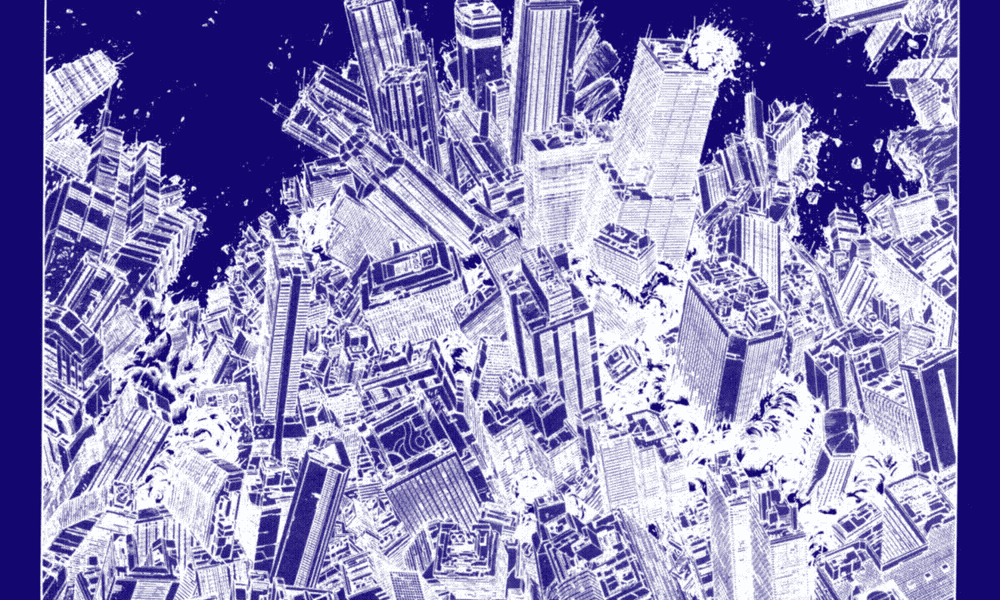
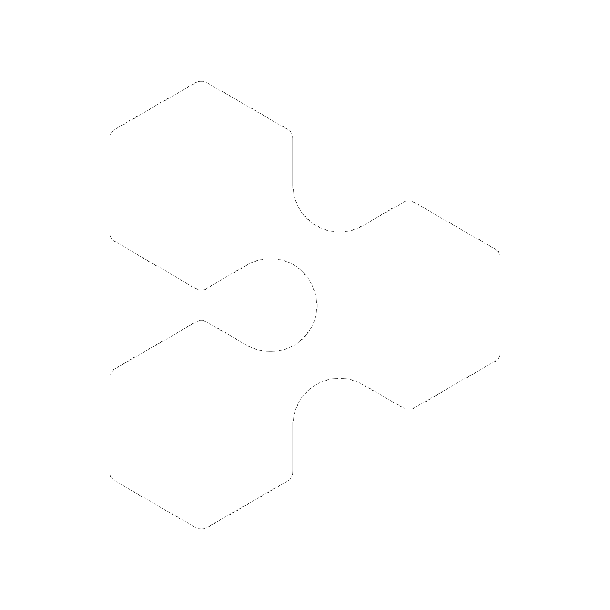
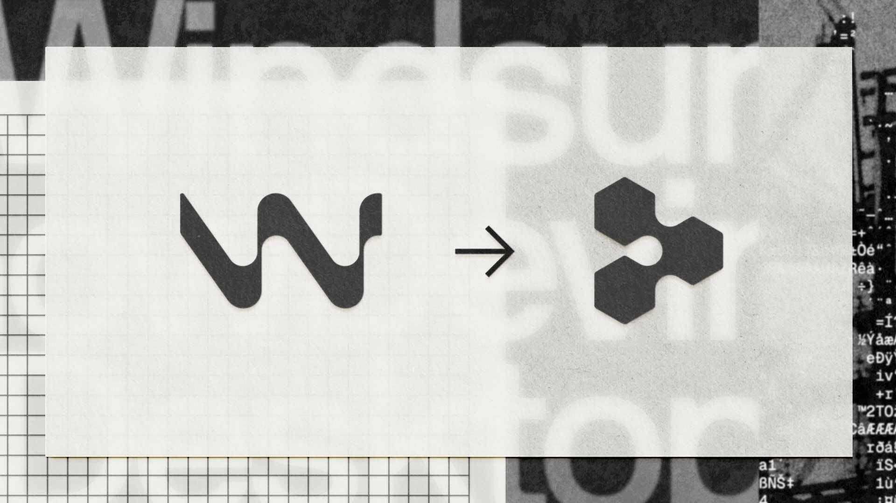
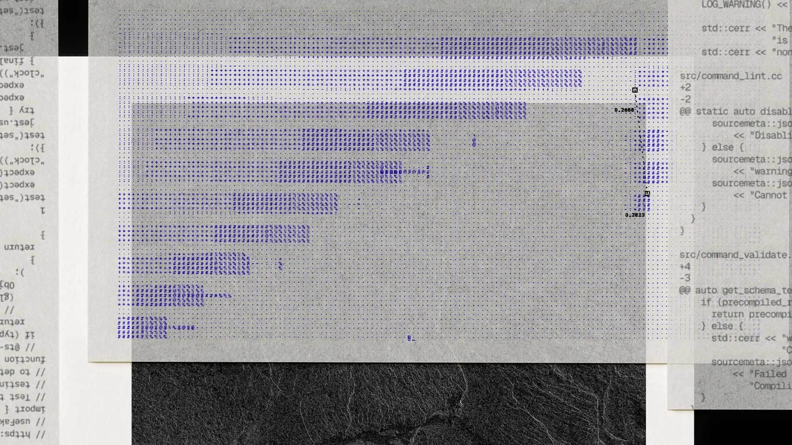
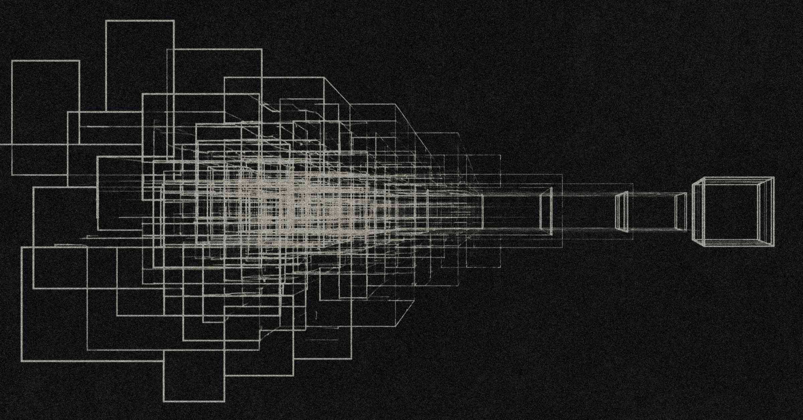
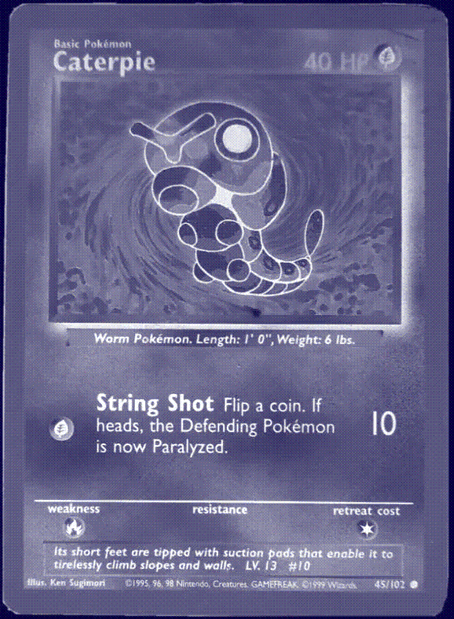
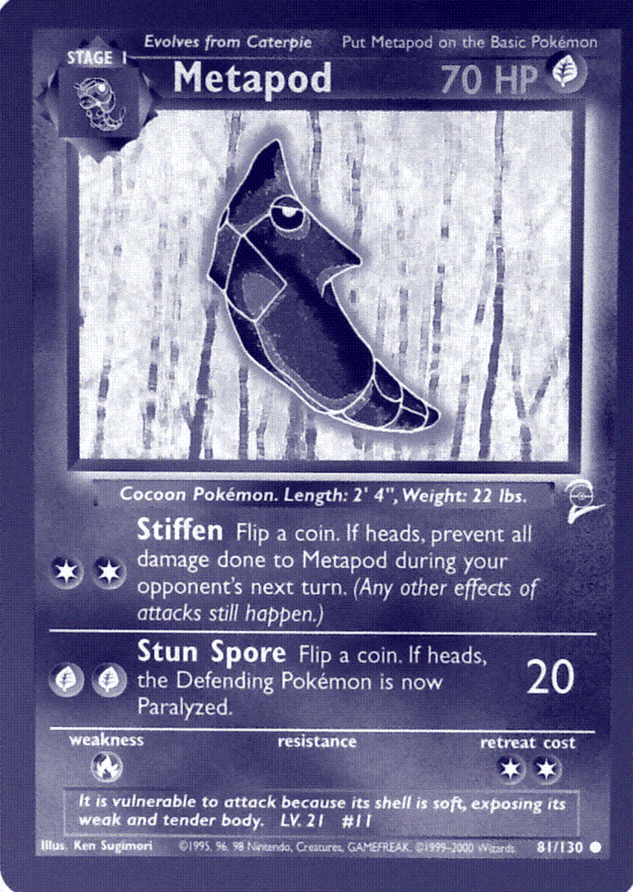
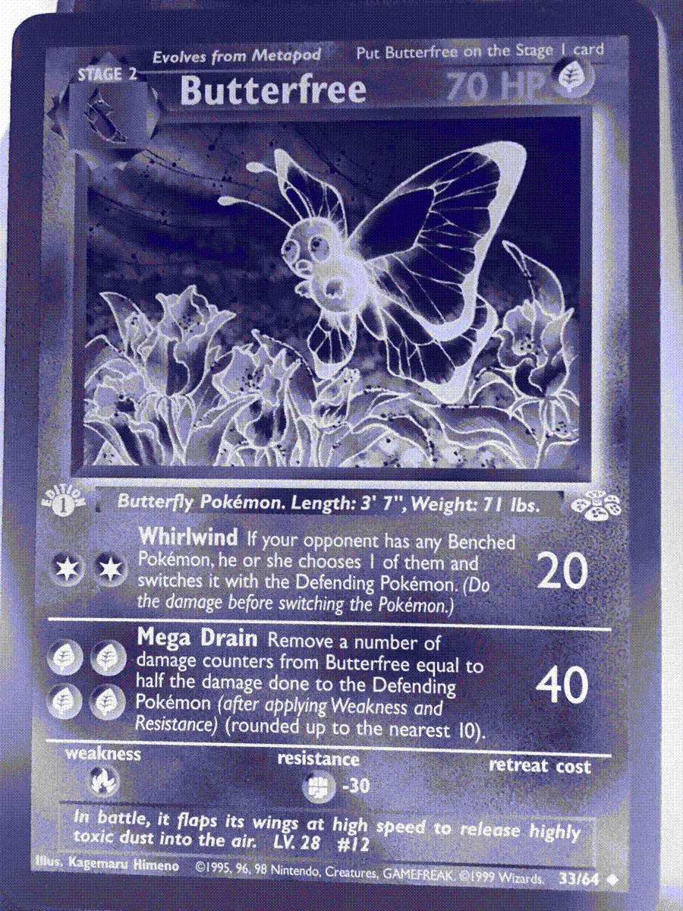

WEBSTER'S DICTIONARY
Chaos
A state of utter confusion; a confused mass or jumble; or the unorganized state of primordial matter before the creation of distinct forms.
The block of clay before it gets sculpted.
AGENTS_OF_CHAOS / PAGE 0001
A hackathon brief for systems that refuse to sit still.
tiny input
impossible future
the system was always listening
DEFINITION_OF_CHAOS / PAGE 0002
WEBSTER'S DICTIONARY
A state of utter confusion; a confused mass or jumble; or the unorganized state of primordial matter before the creation of distinct forms.
The block of clay before it gets sculpted.
CHAOS_AS_RELIGION / DISCORDIANISM
Discordianism is a modern religion, joke, philosophy, and permission structure built around Eris, the goddess of discord.
It treats chaos as sacred material: absurdity, contradiction, individual weirdness, anti-dogma, and the refusal to let authority pretend the world is cleaner than it is.
Embrace absurdity. Challenge authority. Liberate the mind.
POPE_CARD / AUTHORIZED_BY_CHAOS
The joke breaks the hierarchy: permission granted by nobody, therefore available to everyone.
A minister of chaos. A Pope of chaos.
POPE_OF_CHAOS / TEMPORARY_KABAL
In Discordianism, becoming a Pope is not about hierarchy. It is the joke that breaks hierarchy: permission granted by nobody, to everyone.
A kabal is a group that gathers around its own creative gravity. A hackathon is exactly that: a temporary, voluntary disorder where people support each other while refusing to become the same person.
SYSTEM_STATUS / YOU_ARE_HERE
A world where machines are humming even when no machines are visible.
We want intelligence cheap, compute infinite, interfaces smooth, disruption exciting, and consequences someone else can hold.
We keep throwing rocks into the machine and calling the sparks progress.

OUR THESIS
Chaos creates. Chaos destroys. There is beauty in both, but only if we stop pretending that growth is clean.
The old body becomes material. The old plan becomes pressure. The old self becomes something the future must burn through.
The thing you were cannot always survive the thing you become.
THE BUTTERFLY EFFECT
A word in a prompt. A line of code. A market rumor. A design choice. A recommendation. A protest image. A weird joke that arrives at the exact right junction.
The small thing does not matter because it is magical. It matters because the system was already arranged to carry it.
RUBRIC_OF_CHAOS / PAGE 0009
Uses chaos to make something helpful, beautiful, useful, or new.
Uses chaos to expose a flaw, test a system, or break an assumption.
Positive direction, but the artifact is not finished enough.
Destructive, confusing, or random without a clear point.
DEVIN_ROADMAP / LAST_30_DAYS

This is the practical answer to chaos: one place to route work, choose the right model, review the output, and scale parallel agents without losing the thread.

Desktop becomes the command center.Local agents, cloud Devins, third-party ACP agents, PRs, files, and context move into one workspace.

Security enters code review.Every PR can get codebase-aware security review before it reaches production.
Kimi K2.7, GLM 5.2, and Claude Sonnet 5 expand the cost and capability menu.

Agentic MapReduce.Whole-codebase work becomes planned, sharded, mapped, reduced, and verified.
A fleet of Devins maps attack surface, investigates in parallel, and ranks verified findings.
DEVIN_FEATURES / PROBLEM_SOLUTION
Agents say they finished, but nobody opened the browser, checked the flow, or recorded what happened.
Devin answerTesting, browser proof, video recordings, Devin Review, and security review.
Three agents become six branches, stale context, duplicate fixes, and a reconciliation mess.
Devin answerDesktop, cloud handoff, managed sessions, PR review, and one place to monitor the work.
Every agent re-reads the repo, burns tokens, and carries too much unrelated history.
Devin answerDeepWiki, shared context, model choice, and MapReduce-style sharding for large codebases.
MANAGING_CHAOS / FLEET_CONTROL
Use Desktop for local speed. Use Cloud when the task needs a VM, browser, CI, or long-running work.
Use the model and session type that matches the job instead of throwing the most expensive option at everything.
Browser recording, tests, review comments, and security findings make “done” visible.
Shard large codebase work so each agent handles a bounded piece instead of wandering the whole repo.
Fleet control means choosing the worker, environment, spend, and proof.



DEVIN_WORKFLOW / DEMO_01
Devin does not remove uncertainty. It gives uncertainty tools, memory, a sandbox, and a finish line.
THANK_YOU / NOW_MAKE_CHAOS
Now let’s make CHAOS.